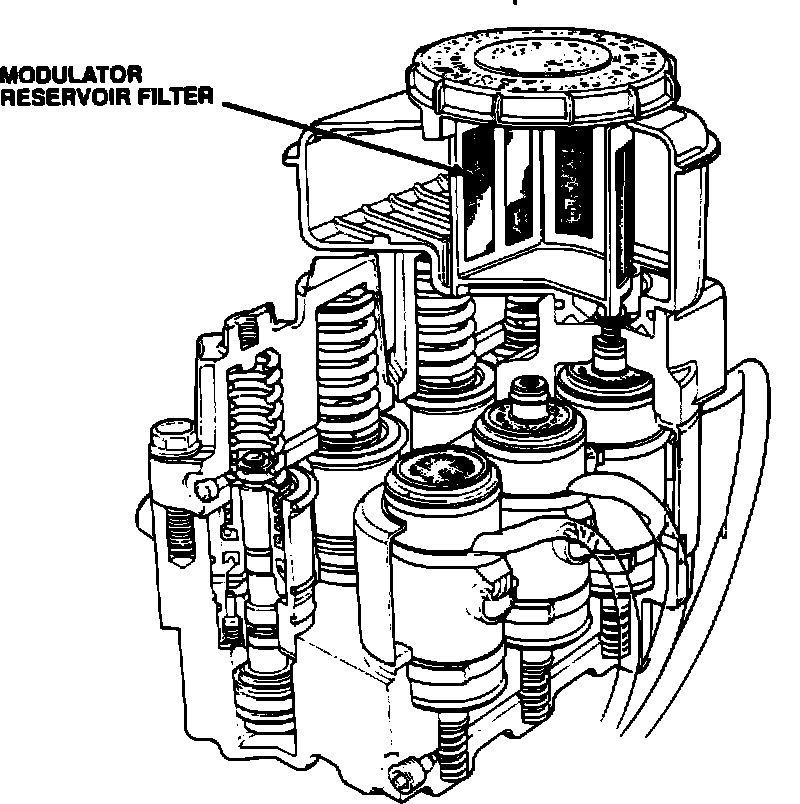

Antilock Brakes - Modulator Reservoir Overflows
89Acura04YEAR MODEL VIN APPLICATION
'87-89 LEGEND See VEHICLES
L and LS AFFECTED
July 24, 1989
BULLETIN NO.
89-016

ALB Modulator Reservoir Overflows
SYMPTOM
The top of the ALB modulator reservoir is wet with brake fluid, yet there is nothing apparently wrong with the ALB system (no ALB warning light, no code on the ALB control unit).
PROBABLE CAUSE
During ALB operation, high pressure brake fluid returning to the ALB modulator reservoir may foam. A small amount of foamed brake fluid may escape through the vent in the modulator reservoir cap. VEHICLES AFFECTED
Coupe: Through VIN JH4KA3 . . . KC015312
Sedan: Through VIN JH4KA4 . . . KC027352
CORRECTIVE ACTION
Replace the modulator reservoir filter with the new type (listed under PARTS INFORMATION) which allows foamed fluid to move back into the reservoir more freely. After replacing the filter, refill the modulator reservoir to the MAX level.
PARTS INFORMATION
Modulator Reservoir Filter: P/N 57193-SG0-802
WARRANTY CLAIM INFORMATION
In warranty: The normal warranty applies.
Out-of-warranty: Any repair performed after warranty expiration may be eligible for goodwill consideration by the District Service Manager. You must request consideration, and get the DSM's decision, before starting work.
Operation number: 413169
Flat rate time: 0.2 hour
Failed P/N: 57110-SG0-871
Defect code: 054
Contention code: B99